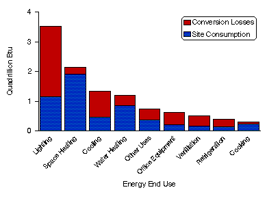

1992 Energy End-Use Intensities
Tables
Energy Consumption by End Use, 1992

Source: Energy Information
Administration, Office of Energy Markets and End Use, Forms EIA-871A through F of the 1992
Commercial Buildings Energy Consumption Survey.
 To View and/or Print Reports (requires Adobe Acrobat Reader) -
Download Adobe Acrobat
Reader
To View and/or Print Reports (requires Adobe Acrobat Reader) -
Download Adobe Acrobat
Reader
If you experience any difficulties, visit our Technical Frequently Asked Questions.
Tables - (file size 31,655 bytes), pages 6. - requires Adobe
Acrobat Reader
- Consumption of All Major Fuels by End Uses, 1992
- Energy End-Use Intensities for All Major Fuels, 1992
- Consumption of Electricity by End Uses, 1992
- Energy End-Use Intensities for Electricity, 1992
- Consumption of Natural Gas by End Uses, 1992
- Energy End-Use Intensities for Natural Gas, 1992
 

File Last Modified: April 7, 1997
- Contacts:
- alan.swenson@eia.doe.gov
- Alan Swenson
- Principal Author
-
- Contact:
- Joelle Michaels
- joelle.michaels@eia.doe.gov
- CBECS Manager
-
URL: http://www.eia.gov/consumption/commercial/data/archive/cbecs/cbecs2p.html
If you are having any technical problems with this site, please contact the EIA Webmaster at
wmaster@eia.doe.gov
|